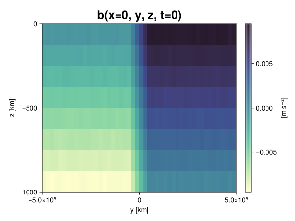
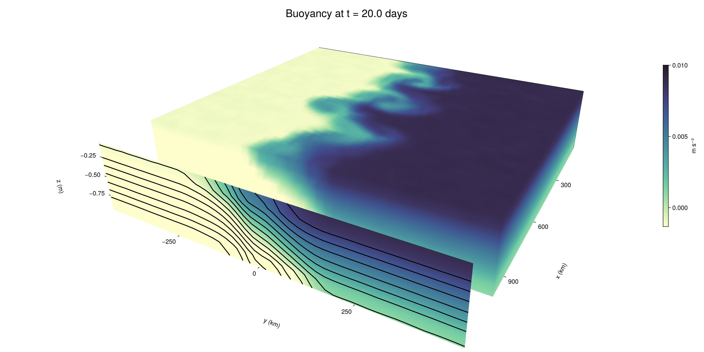

Baroclinic adjustment
In this example, we simulate the evolution and equilibration of a baroclinically unstable front.
Install dependencies
First let's make sure we have all required packages installed.
using Pkg
pkg"add Oceananigans, CairoMakie"using Oceananigans
using Oceananigans.UnitsGrid
We use a three-dimensional channel that is periodic in the x direction:
Lx = 1000kilometers # east-west extent [m]
Ly = 1000kilometers # north-south extent [m]
Lz = 1kilometers # depth [m]
grid = RectilinearGrid(size = (48, 48, 8),
x = (0, Lx),
y = (-Ly/2, Ly/2),
z = (-Lz, 0),
topology = (Periodic, Bounded, Bounded))48×48×8 RectilinearGrid{Float64, Periodic, Bounded, Bounded} on CPU with 3×3×3 halo
├── Periodic x ∈ [0.0, 1.0e6) regularly spaced with Δx=20833.3
├── Bounded y ∈ [-500000.0, 500000.0] regularly spaced with Δy=20833.3
└── Bounded z ∈ [-1000.0, 0.0] regularly spaced with Δz=125.0Model
We built a HydrostaticFreeSurfaceModel with an ImplicitFreeSurface solver. Regarding Coriolis, we use a beta-plane centered at 45° South.
model = HydrostaticFreeSurfaceModel(; grid,
coriolis = BetaPlane(latitude = -45),
buoyancy = BuoyancyTracer(),
tracers = :b,
momentum_advection = WENO(),
tracer_advection = WENO())HydrostaticFreeSurfaceModel{CPU, RectilinearGrid}(time = 0 seconds, iteration = 0)
├── grid: 48×48×8 RectilinearGrid{Float64, Periodic, Bounded, Bounded} on CPU with 3×3×3 halo
├── timestepper: QuasiAdamsBashforth2TimeStepper
├── tracers: b
├── closure: Nothing
├── buoyancy: BuoyancyTracer with ĝ = NegativeZDirection()
├── free surface: ImplicitFreeSurface with gravitational acceleration 9.80665 m s⁻²
│ └── solver: FFTImplicitFreeSurfaceSolver
├── advection scheme:
│ ├── momentum: WENO reconstruction order 5
│ └── b: WENO reconstruction order 5
└── coriolis: BetaPlane{Float64}We start our simulation from rest with a baroclinically unstable buoyancy distribution. We use ramp(y, Δy), defined below, to specify a front with width Δy and horizontal buoyancy gradient M². We impose the front on top of a vertical buoyancy gradient N² and a bit of noise.
"""
ramp(y, Δy)
Linear ramp from 0 to 1 between -Δy/2 and +Δy/2.
For example:
```
y < -Δy/2 => ramp = 0
-Δy/2 < y < -Δy/2 => ramp = y / Δy
y > Δy/2 => ramp = 1
```
"""
ramp(y, Δy) = min(max(0, y/Δy + 1/2), 1)
N² = 1e-5 # [s⁻²] buoyancy frequency / stratification
M² = 1e-7 # [s⁻²] horizontal buoyancy gradient
Δy = 100kilometers # width of the region of the front
Δb = Δy * M² # buoyancy jump associated with the front
ϵb = 1e-2 * Δb # noise amplitude
bᵢ(x, y, z) = N² * z + Δb * ramp(y, Δy) + ϵb * randn()
set!(model, b=bᵢ)Let's visualize the initial buoyancy distribution.
using CairoMakie
# Build coordinates with units of kilometers
x, y, z = 1e-3 .* nodes(grid, (Center(), Center(), Center()))
b = model.tracers.b
fig, ax, hm = heatmap(view(b, 1, :, :),
colormap = :deep,
axis = (xlabel = "y [km]",
ylabel = "z [km]",
title = "b(x=0, y, z, t=0)",
titlesize = 24))
Colorbar(fig[1, 2], hm, label = "[m s⁻²]")
fig
Simulation
Now let's build a Simulation.
simulation = Simulation(model, Δt=20minutes, stop_time=20days)Simulation of HydrostaticFreeSurfaceModel{CPU, RectilinearGrid}(time = 0 seconds, iteration = 0)
├── Next time step: 20 minutes
├── Elapsed wall time: 0 seconds
├── Wall time per iteration: NaN days
├── Stop time: 20 days
├── Stop iteration : Inf
├── Wall time limit: Inf
├── Callbacks: OrderedDict with 4 entries:
│ ├── stop_time_exceeded => Callback of stop_time_exceeded on IterationInterval(1)
│ ├── stop_iteration_exceeded => Callback of stop_iteration_exceeded on IterationInterval(1)
│ ├── wall_time_limit_exceeded => Callback of wall_time_limit_exceeded on IterationInterval(1)
│ └── nan_checker => Callback of NaNChecker for u on IterationInterval(100)
├── Output writers: OrderedDict with no entries
└── Diagnostics: OrderedDict with no entriesWe add a TimeStepWizard callback to adapt the simulation's time-step,
conjure_time_step_wizard!(simulation, IterationInterval(20), cfl=0.2, max_Δt=20minutes)Also, we add a callback to print a message about how the simulation is going,
using Printf
wall_clock = Ref(time_ns())
function print_progress(sim)
u, v, w = model.velocities
progress = 100 * (time(sim) / sim.stop_time)
elapsed = (time_ns() - wall_clock[]) / 1e9
@printf("[%05.2f%%] i: %d, t: %s, wall time: %s, max(u): (%6.3e, %6.3e, %6.3e) m/s, next Δt: %s\n",
progress, iteration(sim), prettytime(sim), prettytime(elapsed),
maximum(abs, u), maximum(abs, v), maximum(abs, w), prettytime(sim.Δt))
wall_clock[] = time_ns()
return nothing
end
add_callback!(simulation, print_progress, IterationInterval(100))Diagnostics/Output
Here, we save the buoyancy, $b$, at the edges of our domain as well as the zonal ($x$) average of buoyancy.
u, v, w = model.velocities
ζ = ∂x(v) - ∂y(u)
B = Average(b, dims=1)
U = Average(u, dims=1)
V = Average(v, dims=1)
filename = "baroclinic_adjustment"
save_fields_interval = 0.5day
slicers = (east = (grid.Nx, :, :),
north = (:, grid.Ny, :),
bottom = (:, :, 1),
top = (:, :, grid.Nz))
for side in keys(slicers)
indices = slicers[side]
simulation.output_writers[side] = JLD2OutputWriter(model, (; b, ζ);
filename = filename * "_$(side)_slice",
schedule = TimeInterval(save_fields_interval),
overwrite_existing = true,
indices)
end
simulation.output_writers[:zonal] = JLD2OutputWriter(model, (; b=B, u=U, v=V);
filename = filename * "_zonal_average",
schedule = TimeInterval(save_fields_interval),
overwrite_existing = true)JLD2OutputWriter scheduled on TimeInterval(12 hours):
├── filepath: baroclinic_adjustment_zonal_average.jld2
├── 3 outputs: (b, u, v)
├── array type: Array{Float64}
├── including: [:grid, :coriolis, :buoyancy, :closure]
├── file_splitting: NoFileSplitting
└── file size: 31.6 KiBNow we're ready to run.
@info "Running the simulation..."
run!(simulation)
@info "Simulation completed in " * prettytime(simulation.run_wall_time)[ Info: Running the simulation...
[ Info: Initializing simulation...
[00.00%] i: 0, t: 0 seconds, wall time: 47.211 seconds, max(u): (0.000e+00, 0.000e+00, 0.000e+00) m/s, next Δt: 20 minutes
[ Info: ... simulation initialization complete (46.202 seconds)
[ Info: Executing initial time step...
[ Info: ... initial time step complete (25.064 seconds).
[06.94%] i: 100, t: 1.389 days, wall time: 55.276 seconds, max(u): (1.238e-01, 1.197e-01, 1.531e-03) m/s, next Δt: 20 minutes
[13.89%] i: 200, t: 2.778 days, wall time: 1.691 seconds, max(u): (2.221e-01, 1.686e-01, 1.759e-03) m/s, next Δt: 20 minutes
[20.83%] i: 300, t: 4.167 days, wall time: 1.728 seconds, max(u): (2.919e-01, 2.260e-01, 1.604e-03) m/s, next Δt: 20 minutes
[27.78%] i: 400, t: 5.556 days, wall time: 1.614 seconds, max(u): (3.852e-01, 2.830e-01, 1.576e-03) m/s, next Δt: 20 minutes
[34.72%] i: 500, t: 6.944 days, wall time: 1.483 seconds, max(u): (4.562e-01, 3.394e-01, 1.668e-03) m/s, next Δt: 20 minutes
[41.67%] i: 600, t: 8.333 days, wall time: 1.490 seconds, max(u): (5.534e-01, 5.016e-01, 2.223e-03) m/s, next Δt: 20 minutes
[48.61%] i: 700, t: 9.722 days, wall time: 1.370 seconds, max(u): (7.729e-01, 8.674e-01, 2.909e-03) m/s, next Δt: 20 minutes
[55.56%] i: 800, t: 11.111 days, wall time: 1.569 seconds, max(u): (1.168e+00, 1.145e+00, 4.179e-03) m/s, next Δt: 20 minutes
[62.50%] i: 900, t: 12.500 days, wall time: 1.417 seconds, max(u): (1.417e+00, 1.072e+00, 4.843e-03) m/s, next Δt: 20 minutes
[69.44%] i: 1000, t: 13.889 days, wall time: 1.410 seconds, max(u): (1.567e+00, 9.340e-01, 4.703e-03) m/s, next Δt: 20 minutes
[76.39%] i: 1100, t: 15.278 days, wall time: 1.333 seconds, max(u): (1.191e+00, 8.751e-01, 2.991e-03) m/s, next Δt: 20 minutes
[83.33%] i: 1200, t: 16.667 days, wall time: 1.435 seconds, max(u): (1.123e+00, 8.944e-01, 2.544e-03) m/s, next Δt: 20 minutes
[90.28%] i: 1300, t: 18.056 days, wall time: 1.473 seconds, max(u): (1.187e+00, 9.448e-01, 2.469e-03) m/s, next Δt: 20 minutes
[97.22%] i: 1400, t: 19.444 days, wall time: 1.345 seconds, max(u): (1.228e+00, 1.115e+00, 2.775e-03) m/s, next Δt: 20 minutes
[ Info: Simulation is stopping after running for 1.617 minutes.
[ Info: Simulation time 20 days equals or exceeds stop time 20 days.
[ Info: Simulation completed in 1.618 minutes
Visualization
All that's left is to make a pretty movie. Actually, we make two visualizations here. First, we illustrate how to make a 3D visualization with Makie's Axis3 and Makie.surface. Then we make a movie in 2D. We use CairoMakie in this example, but note that using GLMakie is more convenient on a system with OpenGL, as figures will be displayed on the screen.
using CairoMakieThree-dimensional visualization
We load the saved buoyancy output on the top, north, and east surface as FieldTimeSerieses.
filename = "baroclinic_adjustment"
sides = keys(slicers)
slice_filenames = NamedTuple(side => filename * "_$(side)_slice.jld2" for side in sides)
b_timeserieses = (east = FieldTimeSeries(slice_filenames.east, "b"),
north = FieldTimeSeries(slice_filenames.north, "b"),
top = FieldTimeSeries(slice_filenames.top, "b"))
B_timeseries = FieldTimeSeries(filename * "_zonal_average.jld2", "b")
times = B_timeseries.times
grid = B_timeseries.grid48×48×8 RectilinearGrid{Float64, Periodic, Bounded, Bounded} on CPU with 3×3×3 halo
├── Periodic x ∈ [0.0, 1.0e6) regularly spaced with Δx=20833.3
├── Bounded y ∈ [-500000.0, 500000.0] regularly spaced with Δy=20833.3
└── Bounded z ∈ [-1000.0, 0.0] regularly spaced with Δz=125.0We build the coordinates. We rescale horizontal coordinates to kilometers.
xb, yb, zb = nodes(b_timeserieses.east)
xb = xb ./ 1e3 # convert m -> km
yb = yb ./ 1e3 # convert m -> km
Nx, Ny, Nz = size(grid)
x_xz = repeat(x, 1, Nz)
y_xz_north = y[end] * ones(Nx, Nz)
z_xz = repeat(reshape(z, 1, Nz), Nx, 1)
x_yz_east = x[end] * ones(Ny, Nz)
y_yz = repeat(y, 1, Nz)
z_yz = repeat(reshape(z, 1, Nz), grid.Ny, 1)
x_xy = x
y_xy = y
z_xy_top = z[end] * ones(grid.Nx, grid.Ny)Then we create a 3D axis. We use zonal_slice_displacement to control where the plot of the instantaneous zonal average flow is located.
fig = Figure(size = (1600, 800))
zonal_slice_displacement = 1.2
ax = Axis3(fig[2, 1],
aspect=(1, 1, 1/5),
xlabel = "x (km)",
ylabel = "y (km)",
zlabel = "z (m)",
xlabeloffset = 100,
ylabeloffset = 100,
zlabeloffset = 100,
limits = ((x[1], zonal_slice_displacement * x[end]), (y[1], y[end]), (z[1], z[end])),
elevation = 0.45,
azimuth = 6.8,
xspinesvisible = false,
zgridvisible = false,
protrusions = 40,
perspectiveness = 0.7)Axis3()We use data from the final savepoint for the 3D plot. Note that this plot can easily be animated by using Makie's Observable. To dive into Observables, check out Makie.jl's Documentation.
n = length(times)41Now let's make a 3D plot of the buoyancy and in front of it we'll use the zonally-averaged output to plot the instantaneous zonal-average of the buoyancy.
b_slices = (east = interior(b_timeserieses.east[n], 1, :, :),
north = interior(b_timeserieses.north[n], :, 1, :),
top = interior(b_timeserieses.top[n], :, :, 1))
# Zonally-averaged buoyancy
B = interior(B_timeseries[n], 1, :, :)
clims = 1.1 .* extrema(b_timeserieses.top[n][:])
kwargs = (colorrange=clims, colormap=:deep, shading=NoShading)
surface!(ax, x_yz_east, y_yz, z_yz; color = b_slices.east, kwargs...)
surface!(ax, x_xz, y_xz_north, z_xz; color = b_slices.north, kwargs...)
surface!(ax, x_xy, y_xy, z_xy_top; color = b_slices.top, kwargs...)
sf = surface!(ax, zonal_slice_displacement .* x_yz_east, y_yz, z_yz; color = B, kwargs...)
contour!(ax, y, z, B; transformation = (:yz, zonal_slice_displacement * x[end]),
levels = 15, linewidth = 2, color = :black)
Colorbar(fig[2, 2], sf, label = "m s⁻²", height = Relative(0.4), tellheight=false)
title = "Buoyancy at t = " * string(round(times[n] / day, digits=1)) * " days"
fig[1, 1:2] = Label(fig, title; fontsize = 24, tellwidth = false, padding = (0, 0, -120, 0))
rowgap!(fig.layout, 1, Relative(-0.2))
colgap!(fig.layout, 1, Relative(-0.1))
save("baroclinic_adjustment_3d.png", fig)
Two-dimensional movie
We make a 2D movie that shows buoyancy $b$ and vertical vorticity $ζ$ at the surface, as well as the zonally-averaged zonal and meridional velocities $U$ and $V$ in the $(y, z)$ plane. First we load the FieldTimeSeries and extract the additional coordinates we'll need for plotting
ζ_timeseries = FieldTimeSeries(slice_filenames.top, "ζ")
U_timeseries = FieldTimeSeries(filename * "_zonal_average.jld2", "u")
B_timeseries = FieldTimeSeries(filename * "_zonal_average.jld2", "b")
V_timeseries = FieldTimeSeries(filename * "_zonal_average.jld2", "v")
xζ, yζ, zζ = nodes(ζ_timeseries)
yv = ynodes(V_timeseries)
xζ = xζ ./ 1e3 # convert m -> km
yζ = yζ ./ 1e3 # convert m -> km
yv = yv ./ 1e3 # convert m -> km49-element Vector{Float64}:
-500.0
-479.1666666666667
-458.3333333333333
-437.5
-416.6666666666667
-395.8333333333333
-375.0
-354.1666666666667
-333.3333333333333
-312.5
-291.6666666666667
-270.8333333333333
-250.0
-229.16666666666666
-208.33333333333334
-187.5
-166.66666666666666
-145.83333333333334
-125.0
-104.16666666666667
-83.33333333333333
-62.5
-41.666666666666664
-20.833333333333332
0.0
20.833333333333332
41.666666666666664
62.5
83.33333333333333
104.16666666666667
125.0
145.83333333333334
166.66666666666666
187.5
208.33333333333334
229.16666666666666
250.0
270.8333333333333
291.6666666666667
312.5
333.3333333333333
354.1666666666667
375.0
395.8333333333333
416.6666666666667
437.5
458.3333333333333
479.1666666666667
500.0Next, we set up a plot with 4 panels. The top panels are large and square, while the bottom panels get a reduced aspect ratio through rowsize!.
set_theme!(Theme(fontsize=24))
fig = Figure(size=(1800, 1000))
axb = Axis(fig[1, 2], xlabel="x (km)", ylabel="y (km)", aspect=1)
axζ = Axis(fig[1, 3], xlabel="x (km)", ylabel="y (km)", aspect=1, yaxisposition=:right)
axu = Axis(fig[2, 2], xlabel="y (km)", ylabel="z (m)")
axv = Axis(fig[2, 3], xlabel="y (km)", ylabel="z (m)", yaxisposition=:right)
rowsize!(fig.layout, 2, Relative(0.3))To prepare a plot for animation, we index the timeseries with an Observable,
n = Observable(1)
b_top = @lift interior(b_timeserieses.top[$n], :, :, 1)
ζ_top = @lift interior(ζ_timeseries[$n], :, :, 1)
U = @lift interior(U_timeseries[$n], 1, :, :)
V = @lift interior(V_timeseries[$n], 1, :, :)
B = @lift interior(B_timeseries[$n], 1, :, :)Observable([-0.009379478327230425 -0.008101348953792763 -0.006879792741772355 -0.005608973017929279 -0.004379020633625229 -0.003118443756917539 -0.0018779345961355588 -0.0006283451622108167; -0.009343643745828559 -0.00813598755494392 -0.006881287124852207 -0.005596212897392125 -0.004382486566872315 -0.003131841998114064 -0.001888002629591543 -0.0006239648580720798; -0.00937424515730611 -0.008138661668718142 -0.006882168530197914 -0.0056087597591620965 -0.0043551838340365094 -0.003127293766438173 -0.0018683497086597063 -0.0006344955059453874; -0.00934388752283984 -0.008129339670558377 -0.0068885805761121415 -0.005640974166427675 -0.004396848483299278 -0.0031195775018940555 -0.0018814489653083755 -0.0006063950609733784; -0.009387403085091442 -0.008149254285276282 -0.006866356590755816 -0.005643318522576712 -0.004370807552539375 -0.003134587943111272 -0.0018805205798786643 -0.0006492110022224614; -0.009391963140430728 -0.008153930585243835 -0.006862960184775185 -0.005613926770295385 -0.004373021047124767 -0.0031252173007759094 -0.0018804285988584905 -0.0006125844231113961; -0.00940231571478138 -0.008113829531585895 -0.006875862462441447 -0.0056150872187105535 -0.004374829111010416 -0.003107875308934768 -0.001867402541033474 -0.0006157157655293853; -0.009366259022679228 -0.008112941448340787 -0.006869472084529228 -0.005640499735772862 -0.004362795174528463 -0.00311725979304088 -0.0018782754640468032 -0.0006222823681685248; -0.009387294747179052 -0.008100545143536085 -0.006856612877506223 -0.005627570299975367 -0.004381001248235508 -0.003127474867817197 -0.0018684479288130628 -0.0006315605968112153; -0.009377278403324231 -0.008121212611628669 -0.006884127712431766 -0.005625139963739538 -0.004377330208128712 -0.003121325124483492 -0.0018597699628794407 -0.0006239724173152021; -0.009347369935168338 -0.008119041892549564 -0.006878686504208999 -0.005639166473279761 -0.004377733648347516 -0.0031297847976594893 -0.0018855653066365188 -0.0006232604127759197; -0.009371105066932358 -0.00811396422031256 -0.006867065972710126 -0.0055899568511853966 -0.004369392362607936 -0.003126613192276814 -0.001880457122802678 -0.0006179212120423074; -0.009387015529907013 -0.008110444401953168 -0.006872107279965799 -0.005614474637919214 -0.004373718850515919 -0.0031183935527020006 -0.0018765827457552706 -0.0006024156259316712; -0.009391898700962199 -0.00814883857621435 -0.006873694757065107 -0.005625124373777546 -0.004376900080297932 -0.0031016499957869804 -0.0018737311166546033 -0.0006245833944302217; -0.009398196767414935 -0.008119440777737469 -0.006885026291636095 -0.005617764794204079 -0.0043613661942592296 -0.0031232193360077754 -0.0018647359820118334 -0.0006292847556759215; -0.009371043394058691 -0.008104264057640507 -0.006894907482802973 -0.0056207549596792 -0.004367817535031446 -0.003113000511281936 -0.001871525851229981 -0.0005987873308388103; -0.00936093005893711 -0.008099828249835002 -0.0068705711862191085 -0.005595013428483992 -0.0043424663926747075 -0.003127731180945037 -0.0018822894478264698 -0.0006468505466919693; -0.009372272030962107 -0.008143557231924302 -0.006877162486130582 -0.005629726168993089 -0.004400036122021466 -0.0031085101661579035 -0.001867458707829379 -0.0006323051437822596; -0.00936946052817583 -0.00811317683008894 -0.0068770100871409475 -0.0056012412518279394 -0.004386199887808064 -0.003114749241372566 -0.0018787029008235532 -0.000623231008452214; -0.009373944332311238 -0.008118143837610286 -0.006856882809940607 -0.005613368242367074 -0.00434358765829459 -0.003111192672875766 -0.0018794014680800074 -0.0006354761544409336; -0.009370349234449639 -0.00808957109145689 -0.006868119393883043 -0.0056103931713962244 -0.004375135490169901 -0.003114653335810127 -0.0018586672559040129 -0.0006291343809937584; -0.009391188666405134 -0.008128023819394046 -0.006871207503579815 -0.005630515562509111 -0.004361825913677973 -0.00312588489826844 -0.0018661808165869962 -0.0006098192899947282; -0.00751031027323043 -0.006241985272538368 -0.004986908846968431 -0.003774749873344913 -0.0025209158741069737 -0.0012605121066323777 -1.4205769794681228e-5 0.0012374625855317678; -0.005447012631249058 -0.004173771431466882 -0.0028921092284430864 -0.0016795717509347984 -0.0004146701550454628 0.0008300105363255795 0.002065321062336802 0.0033356393944841615; -0.0033309110627891022 -0.002080155880803285 -0.0008335335742406818 0.0004054091494351832 0.0016897973982456472 0.002927092836675062 0.004192100071885721 0.005416654793025728; -0.0012783015000611658 4.276787010358356e-5 0.001223429987370078 0.0024870543443426315 0.003726133861530086 0.005010407761960188 0.006235031341926863 0.007491617358863427; 0.0006279090177924298 0.0018696050194696816 0.0031307668206258334 0.0043937159770588595 0.005643898301190993 0.0068680526312043175 0.00812794101068484 0.009384006746575418; 0.0006285911001990145 0.001909896983169218 0.0031385525634388266 0.004360880382152261 0.005608097751823964 0.006864077208720641 0.008163415437861643 0.009390829812046473; 0.0006384051228900491 0.0018939899531434832 0.0031600160660093025 0.004375897296375342 0.005634723558637092 0.00684160188094944 0.008108839728124083 0.009378552577352985; 0.0006293330089239497 0.001882430883998645 0.003124968309142131 0.004357836171278183 0.00563288677863432 0.006870569804134779 0.008114956426776268 0.009401182046814852; 0.0006319830742855639 0.001847589612868364 0.0031104436080784995 0.004338298338820954 0.005617711530790941 0.006882538471975094 0.008112156308990556 0.009377629451023469; 0.0006077485661195933 0.0018909824575895054 0.0031533722296511937 0.004384299477733063 0.005620365069250959 0.006868940239305936 0.00810250176146815 0.009356724295288428; 0.0006170038497723575 0.0018686486350563151 0.0031274873650796475 0.004362836972371463 0.005632366887163745 0.006867007470612357 0.008156198107242761 0.009374059498523912; 0.0006317810816320876 0.0018687662374038292 0.0031315246341289305 0.0043600336905179555 0.00562676745458368 0.006884820485528783 0.008123369950876395 0.009385445653465985; 0.0006243781119024476 0.0018909081115396776 0.003128578445356097 0.004401215314621548 0.005598857919996293 0.0068600218394691504 0.008100494187422298 0.009371633744198903; 0.0005825131560658743 0.0018946798498385388 0.0031618007794966224 0.004376905957073812 0.00563245386169443 0.006890351888179831 0.008110771965570559 0.00936401710760281; 0.0006066651292793286 0.001884506492509267 0.003103253100409559 0.004378807790852752 0.005620940078057575 0.006859254907057578 0.008129075903619705 0.009385150443915106; 0.0006315597928015983 0.001896855859471477 0.0031318857054691597 0.0044046006059292354 0.005623258486176022 0.006886904560676191 0.008124656178905844 0.00938720659799183; 0.0006336464923884104 0.0019063064555345781 0.003142318585629491 0.004382844574028555 0.005631126522394988 0.006864693559177849 0.008123143078439319 0.009385157192454164; 0.000626143593288396 0.0018747929276571645 0.0031405143988356503 0.004374251030528999 0.005637924660312159 0.006905492405855147 0.008133523078924435 0.009391747452937126; 0.0005895831696445221 0.0018805377065709116 0.003117706103072642 0.004382158483048314 0.005628603873539954 0.006857281582737823 0.008120596524601455 0.009376459038285411; 0.0006183619443174207 0.0018658478631221568 0.0031051844954919695 0.004385944648088291 0.0056355982249703986 0.006864589955971184 0.008145134794038743 0.009381310434306823; 0.0006149493169839809 0.001878298855020324 0.003119828947335051 0.004365311184832957 0.00563344696501161 0.006871389615956287 0.008139056701572321 0.009359780186095642; 0.0006467781635583272 0.00187533087232358 0.0031170766799129717 0.004393986908632585 0.005639123511538747 0.006855381995254516 0.008114804114547123 0.009366119514352879; 0.000594212828338265 0.0018834675890983504 0.00308756052985871 0.004371551155570282 0.0056308645228803494 0.00687901573759929 0.008143736012251934 0.009364024782366762; 0.0006250347902092239 0.0018638221261186331 0.0031309647161722174 0.004376778786073372 0.005631094837941881 0.006888559410561257 0.008136103642908388 0.009361095377442752; 0.0005989084452372946 0.001882064753590348 0.003142202319071512 0.0043900879061810364 0.005629607670212914 0.006872128195902195 0.008138696609399839 0.00936020316082535; 0.0006184293239728623 0.0018703269327143338 0.003146415412326058 0.004360952326653145 0.005632269100875759 0.006879166585572007 0.0081257604868383 0.009365204477735199])
and then build our plot:
hm = heatmap!(axb, xb, yb, b_top, colorrange=(0, Δb), colormap=:thermal)
Colorbar(fig[1, 1], hm, flipaxis=false, label="Surface b(x, y) (m s⁻²)")
hm = heatmap!(axζ, xζ, yζ, ζ_top, colorrange=(-5e-5, 5e-5), colormap=:balance)
Colorbar(fig[1, 4], hm, label="Surface ζ(x, y) (s⁻¹)")
hm = heatmap!(axu, yb, zb, U; colorrange=(-5e-1, 5e-1), colormap=:balance)
Colorbar(fig[2, 1], hm, flipaxis=false, label="Zonally-averaged U(y, z) (m s⁻¹)")
contour!(axu, yb, zb, B; levels=15, color=:black)
hm = heatmap!(axv, yv, zb, V; colorrange=(-1e-1, 1e-1), colormap=:balance)
Colorbar(fig[2, 4], hm, label="Zonally-averaged V(y, z) (m s⁻¹)")
contour!(axv, yb, zb, B; levels=15, color=:black)Finally, we're ready to record the movie.
frames = 1:length(times)
record(fig, filename * ".mp4", frames, framerate=8) do i
n[] = i
endThis page was generated using Literate.jl.